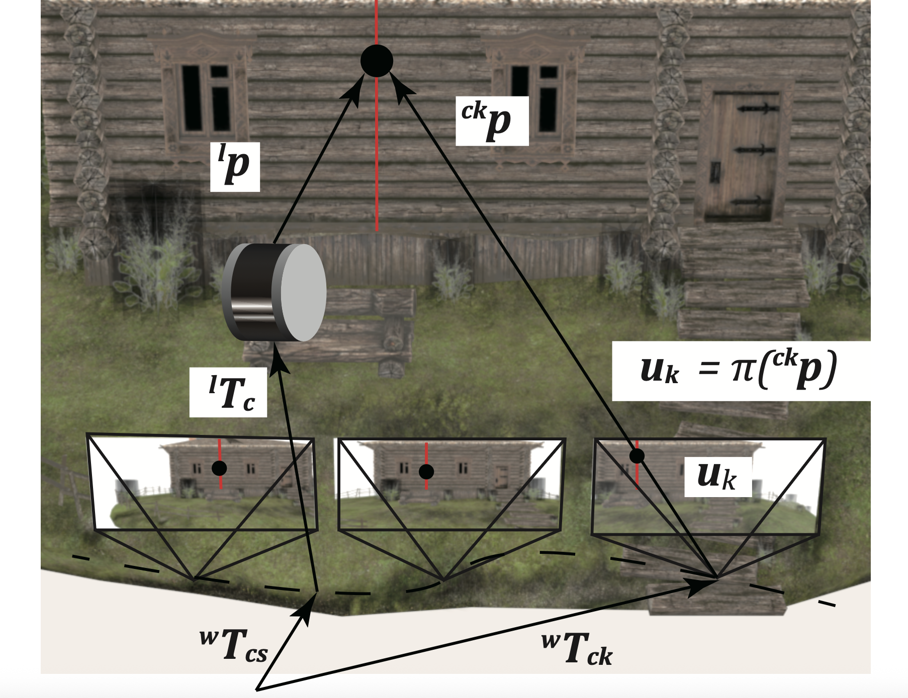

I am a Ph.D. candidate at the The University of Tokyo, advised by Prof. Takeshi Oishi. I received my Master's degree from The University of Tokyo in 2023 and my Bachelor of Science degree (Electrical and Computer Engineering) from Shanghai Jiao Tong University (UM-SJTU Joint Institute) in 2021.
My research focuses on 3D vision, particularly sensor fusion and differentiable rendering techniques such as Gaussian Splatting and Neural Radiance Fields (NeRF). I excel at developing innovative algorithms that enhance 3D reconstruction and scene understanding from multi-modal data sources.
I am looking for full-time job opportunities from Oct. 2026.
Publications



LiDAR-Camera Calibration using Intensity Variance Cost
A targetless LiDAR-camera calibration applicable even to 1D LiDAR using the cost function based on intensity variance.

Experience
Research Engineer Intern, T2 Inc.
Sensor fusion, Autonomous driving.
Research Intern, CyberAgent AI Lab
Gaussian Splatting, Mesh Reconstruction, Digital human.
Research Assistant, The National Institute of Advanced Industrial Science and Technology (AIST)
Sensor fusion, NeRF.
Awards
2025
MIRU Student Encouraging Award
2024
MIRU Excellence Award
2023
MIRU Student Encouraging Award